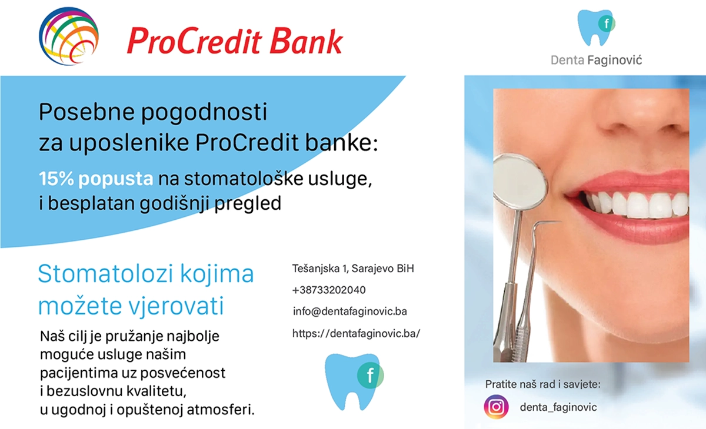
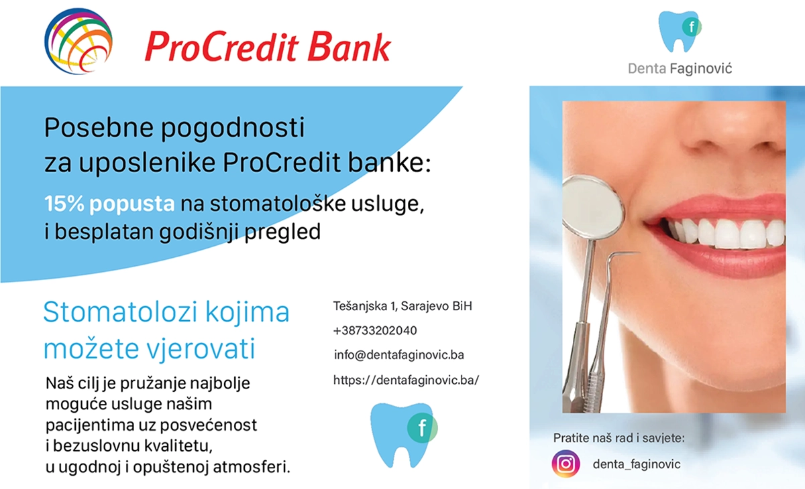
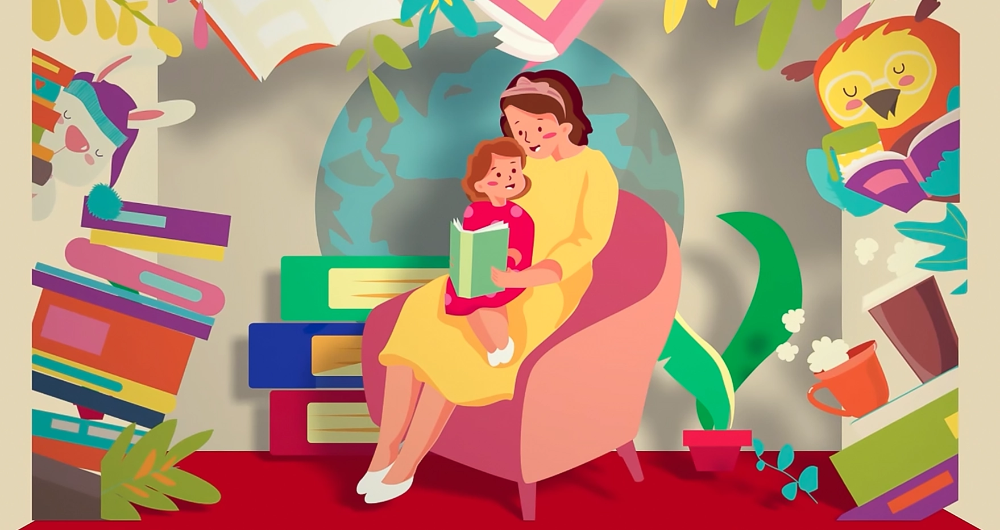

↑ TOP
All works listed below were done in association with eMedia Patch.
The initial designs displayed below were done in Photoshop, and the animation and post-processing was done in After Effects. All of the displayed examples are Rich Media Mockups, which means advertisement sales pitches, done for Fandom.
Some of the hand picked examples of Skybox animation done for the same client (Fandom) while working for eMedia Patch, all done in Photoshop and After effects and in standard 1600x400 Skybox size.
This project involved creating a welcoming brand identity for an elderly care home preparing for its grand opening. The logo features warm shades of orange and yellow, symbolizing comfort, positivity, and care, while retaining its practicality in real-world applications.
The website design was focused on simplicity, accesibility, and providing easy access to essential information for families and residents.
Through a year long cooperation with a dental office Denta F, I had an opportunity to work on many advertising and charity related projects. I designed flyers, coupons, and other stationary and advertising materials, together with gift cards for special occasions.
A standout piece was a coupon for children’s first teeth cleaning and dental check-up—aimed at helping young patients build trust and comfort with dental care early on. Each design emphasized a welcoming and professional tone, aligning with the office’s mission to provide stress-free dental experiences for patients of all ages.
 

In 2023, I had an opportunity to work together with another independent artist and animator on a commissioned short animation for one of the small businesses promoted by the local start-up company Mozaik. We shared the work, which consisted of designing the scenes and assets in Adobe Illustrator, then composing and animating them in Adobe After Effects.
Please check out the full video by visiting the link: https://www.youtube.com/watch?v=u7wdGq0YDtU
A collection of unofficial alternative covers for horror classics, made for a regular client and a fellow horror genre fan, made with a combination of digital painting and photo editing.
Creating visually striking posters is one of my favorite ways to bring ideas to life! Here is a collection of posters for events and community engagement, from advertisements for horror books and movie clubs, to a tabletop role-playing event.